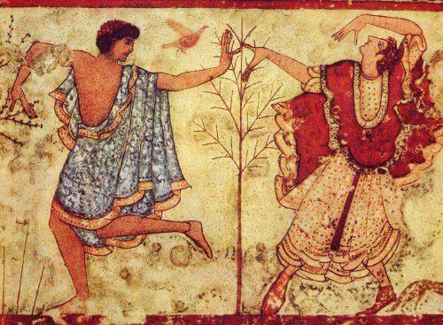

الحضارة الإتروسكانية

هي الاسم الحديث لحضارة عاشت في إيطاليا القديمة في منطقة توسكانا الحالية تقريباً وأطلق عليهم الرومان القدماء
اسم إتروسكي أو توسكي.اسمهم الروماني هو أصل تسمية توسكانا (معقلهم) وإتروريا (كامل منطقتهم).
سماهم الإغريق تيرينيوي والتي اشتقت اللاتينية منها اسم "ماري تيرينوم" "البحر التيراني".استخدم الأتروسكان تسمية
راسينا والتي أدغمت لتصبح راسنا.
تميزت الحضارة بلغتها الخاصة وبدأت في وقت غير معروف في ما قبل التاريخ وما قبل تأسيس روما حتى استوعبت بالكامل في
الجمهورية الرومانية. خلال أقصى اتساعها وذلك خلال فترة تأسيس روما والمملكة الرومانية ازدهرت في ثلاث مدن
كونفدرالية: إتروريا في
وادي بو عند جبال الألب الشرقية ولاتيوم وكامبانيا. كانت روما ضمن الأراضي الخاضعة للسيطرة الأترورية. هناك أدلة
كثيرة على أن روما خضعت في بداياتها للأتروسكان حتى طرد الرومان في 396 ق.م.
تطورت الثقافة الأترورية في إيطاليا بعد حوالي 800 ق.م تقريباً على أنقاض الثقافة الفيلانوفية من العصر الحديدي.
تنحت هذه الأخيرة في القرن السابع الميلادي لثقافة تأثرت بالتجار اليونانيين والجيران اليونان في ماجنا غراسيا،
وهي الحضارة الهيلينية
في جنوب إيطاليا. بعد عام 500 قبل الميلاد انتقل القرار السياسي لإيطاليا إلى يدي الأتروريين.
الأصل والتاريخ
أصول الإتروسكان فقدت قبل التاريخ، علماء التاريخ لم يجدوا صناعة أدبية أو نصوص مقروءة من ديانة أو فلسفة، ولذلك
أكثر ما عرف عن هذه الحضارة استيق من ما وجد بالقبور والأضرحة. النظرية الرئيسية التي تبحث أصلهم تقول بأنهم هم
السكان الأصليون، من
ثقافة الفيلانوفيين أو من الشرق القريب، وكان توسعهم مركزا إلى الشمال وراء جبال الأبنين وحتى كامبانيا، ووجد أن
كثير من القرى والبلدان الصغيرة خلال القرن السادس قبل الميلاد أختفت بسبب الجيران القويين الإتروسكانيين، وكان من
المؤكد أن البنية
السياسية للثقافة الإتروسكانية كانت أكثر ارستوقراطية من مدن ماجنا غراسيا Magna Graecia في الجنوب الإيطالي. كانت
التجارة والتنقيب عن المعادن خاصة الحديد والنحاس قد أدت إلى غنى الإتروسكانيين الذي أدى إلى توسعهم وتأثيرهم
الكبير في شبه الجزيرة
الإيطالية وعلى غرب المياه الدافئة (البحر الأبيض المتوسط)، وهنا اصطدمت طموحاتهم واهتماماتهم مع الحضارة
الإغريقية، خاصة في القرن السادس قبل الميلاد، عندما بدأت المستعمرات الإيطالية تتوسع حتى فرنسا وإسبانيا إلى
جزيرة كورسيكا، وبذلك نشأ بينهم
وبين القرطاجيين حلف بسبب أن الأخيرين أيضا مصالحهم واهتماماتهم مصطدمة بالمصالح الاغريقية.
حوالي عام 540 قبل الميلاد، وقعت معركة ألاليا التي أدت إلى توزيع القوى في غرب البحر المتوسط، مع أن المعركة لم
تحسم لأي من الطرفين والذين كانوا الإتروسكانيين والقرطاجيين المتحالفين من طرف والمستعمرات والمستوطنات الإغريقية
من طرف اخر، لكن
توسعت حدود القرطاجيين على حساب الإغريق، في النصف الأول من القرن الخامس قبل الميلاد بدأ انحسار حدود
الإتروسكانيين، فقد هزُمت استروريا على يد مدن الجنوب الإيطالي ماجنا كريشا بقيادة سيراكيوز وبعد سنوات قليلة عام
474 قبل الميلاد هزم
الإتروسكانيين على يد طاغية سيراكيوز هيرو Hiero I of syracuse في معركة كاماي Cumea، وتوسعت حدود اتروريا حتى مدن
لاتيوم وأضعفت كامبانيا واحتلت من قبل الرومان وغيرهم من الشعوب المشاركة مع الرومان، وبدأت روما بتطويق المدن
الإتروسكانية
واحتلالها حتى انتهت دولتهم، واحتلت روما أيضا اتروريا في القرن الثالت قبل الميلاد.
المعتقدات
لم يترك الأتروسكيون كتابات تاريخية أو أدبية "باستثناء النقوش البسيطة القليلة العدد التي عرّفت العالم على
كتابتهم وعدداً من مفردات لغتهم. أما معتقداتهم فتدل عليها فنونهم في النحت والنقش، وكان منهم الفنان فولكا Vulca
المعروف لدى الرومان.
ومن الكائنات المركّبة الغريبة التي يبدو أنها كانت مقدّسة عندهم الكيميرا وهو حيوان خيالي له رأس أسد وجذع تيس
وذيل أفعى، كما كان للذئب مكانة مقدسة أيضاً في معتقداتهم، وهو ما يشي بأسطورة رومولس مؤسس روما الذي أرضعته ذئبة،
كما كانوا يقدسون
البرق وغيره من الظواهر الطبيعية، ويمارسون التنبؤ بالتحديق في أحشاء الذبائح القربانية وقراءتها، ويتفق الباحثون
أنهم عرفوا وقدسوا الثالثوث جوبيتر وجونو ومنيرفا، الذي يبدو أنه كان ذا أصل أتروسكي.
ومن الثابت أن أسطورة تأسيس روما وطقوسها (أي خط المدينة الذي يرسمه محراث برونزي يجره ثور وبقرة) إنما تعود إلى
الأتروسكان، ومن المرجح أن أتروسكانيين هم من قام بأداء هذه الطقوس، وتذهب بعض القراءات إلى أن أول حكام روما كان
ملكاً أتروسكانياً،
قبل أن تتسقل وتبدأ مسارها الخاص المنفصل، وهو المعروف في الدراسات التاريخية بالكلمة اللاتينية Fatum. وقد يكون
آخر الملوك الأتروسكان قد أزيح في نهاية القرن السادس ق.م. وبعبارة أخرى فإن التاريخ المعطى لتأسيس روما (أي 750
ق.م) ليس في الحقيقة
سوى تاريخ انتهاء سيطرة الأتروسكان على المدينة التي نشأت على أيديهم، وبداية سيطرة الرومان".